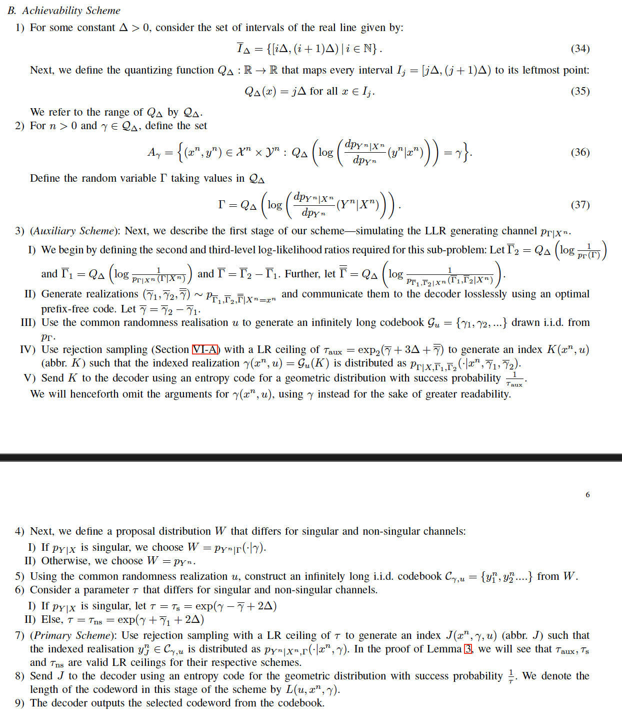
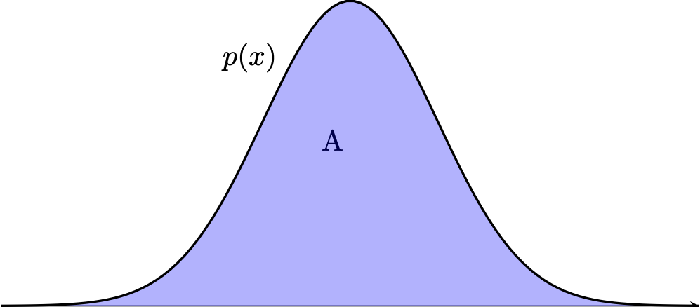

Singular Relative Entropy Coding with Bits-Back Rejection Sampling
Gergely Flamich
03/06/2026
paper now available on Arxiv!
In Collaboration With
background
lossless compression
- Source: \(X \sim P_X\)
- Code: \(C(x) \in \{0, 1\}^*\)
- Decode: \[ C^{-1}(C(x)) = x \]
- Measure of efficiency: \(\mathbb{E}[\vert C(X) \vert]\)
- Entropy code: \[\mathbb{E}[\vert C(X) \vert] = \mathbb{H}[P_X] + \mathcal{O}(1)\]
stochastic codes
- Source: \(X \sim P_X\)
- Perturbation: \(P_{Y \mid X = x}\)
- Shared randomness: \(Z \sim P_Z\)
- Code: \(C(x, z) \in \{0, 1\}^*\)
- Decode: \[ D(C(x, Z), Z) \sim P_{Y \mid X = x}\]
the objective
Rate: \(\mathbb{E}[|C(X, Z)|]\)
Optimal rate:
the bounds
One-shot (\(X \to Y\)): letting \(I = I[X; Y]\),
\[ I \leq R^*(X \to Y) \leq I + \log (I + 1) + 4 \]
Asymptotic (\(X^n \to Y^n\)):
\[ \frac{1}{n}R^*(X^n \to Y^n) \to I \quad \text{as } n \to \infty \]
second order
Asymptotic (\(X^n \to Y^n\)), second order:
\[ R_2^* =\lim_{n \to \infty}\frac{R^*(X^n \to Y^n) - n I[X; Y]}{\log n} \]
Then:
\[ R_2^* = \begin{cases} 0 & {\color{red}X \to Y\text{ singular}}\\ \frac{1}{2} & \text{otherwise} \end{cases} \]
singular channel
For \(P_{X, Y}\), the direction \(X \to Y\) is singular if \[ \frac{dP_{Y \mid X}}{dP_Y}(y \mid x) = g(y) \quad P_{X, Y}-\text{a.s.} \]
E.g. additive uniform channel, typewriter channel.
sriramu and wagner's algorithm

ingredients for bits-back rejection sampling
a general stochastic code: rejection sampling

Fact: \((x, y) \sim \mathrm{Unif}(A) \, \Rightarrow\, x \sim P\)
a general stochastic code: rejection sampling

invertible sampling
- stream codes \(C_P(m, x) = m'\) for source \(P\)
- \(C_P^{-1}(\mathcal{BP}(1/2)) = (X, M)\), then \(X \sim P\)
bits-back coding
\[ = \text{ invertible sampling } + \text{ error correction} \]
perfect error correction
Given \(Y \sim P_{Y \mid X = x}\) have \(g\) such that
\[ g(Y) = x \]
bits-back coding
Source \(P_X\), perfectly correctable \(P_{Y \mid X}\)
encoder: given \(M, X\),
- decode \((M', Y) = C_{P_{Y \mid X}}^{-1}(M)\)
- encode \(M'' = C_{P_Y}(M', Y)\)
decoder: given \(M''\),
- decode \((M', Y) = C_{P_Y}^{-1}(M'')\)
- recover \(X = g(Y)\)
- encode \(M = C_{P_{Y \mid X}}(M', Y)\)
efficiency of bits-back coding
- message \(M\), source \(X\)
- decode: \(|M| - |M'| \approx -\log P(Y \mid X)\)
- encode: \(|M''| - |M'| \approx -\log P(Y)\)
bits-back rejection sampling
start like Sriramu and Wagner
\(\Gamma = Q_{\Delta}(\log \frac{dP_{Y \mid X}}{dP_Y}(Y \mid X))\)
Two part code \((\Gamma, Y) \mid X\):
- rejection code \(\Gamma \mid X\)
- rejection code \(Y \mid \Gamma, X\)
the key observation
if \(X \to Y\) is singular:
\[ \frac{dP_{Y \mid X}}{dP_Y}(y \mid x) = g(y) \quad P_{X, Y}-\text{a.s.} \]
\(P_{Y \mid \Gamma}\) can be perfectly error-corrected:
\[ \Gamma = Q_{\Delta}(\log g(Y)) \]
putting things together
Sample \(\Gamma \mid X\)
\(K\) – rejection code for \(Y \mid \Gamma\)
decode rejections from stream \(M\)
recover \(\Gamma\) from \(K\)
\(N\) – rejection code for \(Y \mid \Gamma, X\)
analysis
\[ R(X \to Y) \leq I[X; Y] + \log(\mathbb{H}[\Gamma] + 1) + 2 \Delta + 6 \]
Sriramu and Wagner: for \(X^n \to Y^n\), \[ \frac{1}{\log n}\log(\mathbb{H}[\Gamma_n] + 1) \to 0 \text{ as } n \to \infty \]
Hence
\[ R^*_2 \to 0 \text{ as } n \to \infty \]